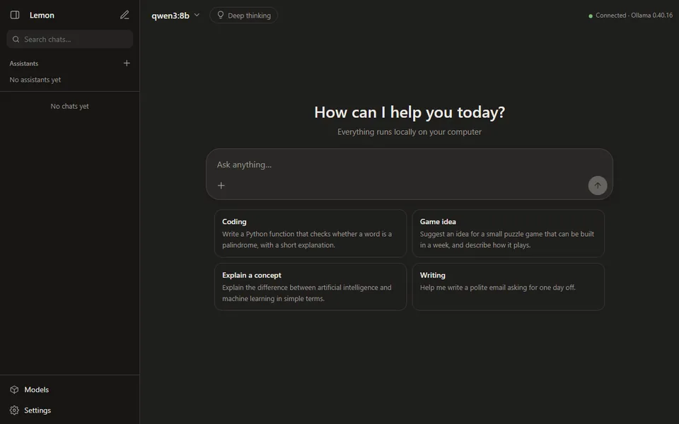
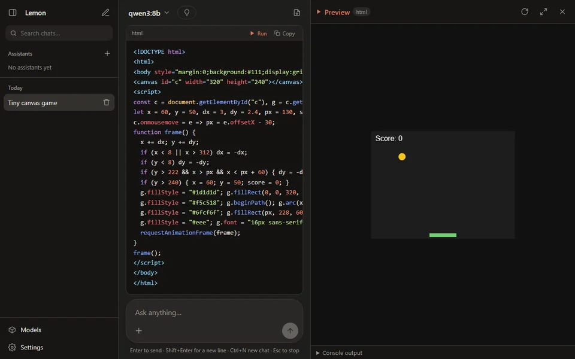

A familiar chat
Answers stream in as they are written, with stop, copy, regenerate and edit-and-resend. Thinking runs only when you turn on “Deep thinking”, and the selected model loads in the background so the first answer is faster.
 Lemon™ · local AI chat
Lemon™ · local AI chat
A ChatGPT-style Windows app for AI models that run on your computer, with a built-in engine: Ollama is no longer required. One small .exe, in Arabic and English, with no account and no cloud.
Free · Windows 10/11, 64-bit · single file, no installer · no Ollama needed
 Lemon
Lemon
Features
With the built-in engine, your prompts, files and chats never leave your computer. Online mode is optional and separate.
Answers stream in as they are written, with stop, copy, regenerate and edit-and-resend. Thinking runs only when you turn on “Deep thinking”, and the selected model loads in the background so the first answer is faster.
Give an assistant your PDFs, text, code or notes. It answers only from them in strict mode and shows its sources under each answer.
Run HTML, JavaScript or SVG, from pages to small games, in a sandboxed side panel. Errors are caught, with an “ask for a fix” button.
Download and delete models inside the app. The default is Gemma 4 E2B (about 3.1 GB), and bigger models, such as Gemma 4 26B-A4B, are suggested by your RAM and graphics card. Models download from huggingface.co.
Switch the language live in Settings, with correct right-to-left and left-to-right layout everywhere. Light, dark or system theme.
No telemetry, accounts or ads. Its local server listens on 127.0.0.1 only and refuses requests from other websites. Updates install in one click, checked with SHA-256.
ChatGPT, Claude, DeepSeek and Copilot open inside Lemon with your own account, each with separate data you can clear. Gemini opens in your browser.
Lemon can search your files through InstaFind, and read and summarise a file you pick. You approve every step.
A built-in assistant with about 120 Arabic articles on common Windows problems, with an “Open this setting” button.
New in 2.2
With deep understanding, on by default for new assistants, the model reads each document once and writes a structured digest of its sections, numbers and conditions.
Indexing takes longer with deep understanding: in the developer’s test on an RTX 2070 (8 GB) with qwen3:8b, a 6-page Arabic PDF took about 95 seconds. Scanned PDFs without a text layer can’t be read; use a copy with OCR text.
Lemon
Requirements
Lemon carries its own engine (llama.cpp, on your graphics card through Vulkan or on the processor), so you don’t need to install anything else. Ollama is still supported if you prefer it.
local-ai-chat.exe. There is no installer: keep the file wherever you like. Pick your language on first run.
Free. One file, straight from the app’s official release.
The release notes show the file’s SHA-256 fingerprint. To compare it, run Get-FileHash .\local-ai-chat.exe in PowerShell.
Not for chatting. Chats run on your PC. The internet is used only to download the engine and models (from github.com and huggingface.co), for the update check, which you can turn off in Settings, and for Online mode, which opens ChatGPT, Claude, DeepSeek or Copilot with your own account.
No. Lemon has a built-in engine, so Ollama is optional. If you already use Ollama, Lemon can connect to it at http://127.0.0.1:11434 by default, and you can change that address in Settings. Each model has its own license.
Open Models in Lemon: the catalog rates each model against your graphics card and memory. The default, Gemma 4 E2B (about 3.1 GB), is a good start, and bigger models are suggested if your PC can run them. Small models also run without a graphics card, only more slowly.
In %APPDATA%\LocalAiChat on your PC: one file per conversation, plus settings and assistants. Exports go to Documents\LocalAiChat. To keep everything in one folder instead, set the LOCALAI_DATA_DIR environment variable.
Not yet. A scanned page is only an image, so there is no text to read. Give the assistant a copy of the PDF with OCR text and it works as usual.
Lemon is not code-signed yet, so SmartScreen doesn’t recognise the publisher. Click “More info”, then “Run anyway”. Every release is built automatically, and you can compare the file’s SHA-256 fingerprint with the one on the release notes.
Close Lemon and delete local-ai-chat.exe. To also delete your chats and settings, remove the LocalAiChat folders. Downloaded models and the engine live in %LOCALAPPDATA%\LocalAiChat\models: delete that folder, or delete models from Lemon’s Models page, to free the space. Models you use through Ollama stay in Ollama.